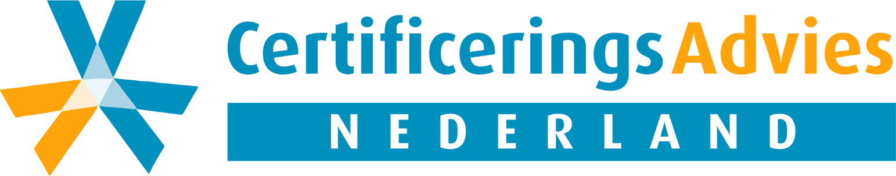
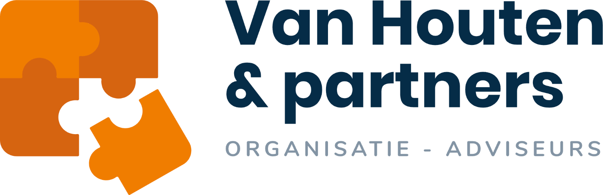
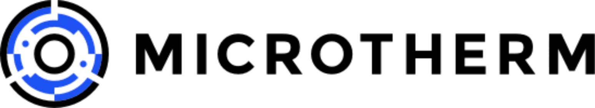

RI&E via AI-voicegesprekken
In korte AI-voicegesprekken halen we de kennis op bij de mensen die het werk kennen. Jij krijgt een complete RI&E met plan van aanpak, voor een fractie van een adviestraject.
Standaard in de RI&E-trajecten van CertificeringsAdvies Nederland · Eerste volledige RI&E bij Microtherm (Vink Groep)
Heftruck wordt bediend zonder vastgelegde instructie; looproutes in het magazijn zijn niet gemarkeerd.
Illustratief voorbeeld



68%
van de bedrijven heeft een RI&E. Bijna een derde heeft er dus geen.
30%
van de RI&E’s die er wél zijn, scoort onvoldoende op kwaliteit.
1 juli
2026: alle werkgevers moeten medewerkers raadplegen over het arbobeleid, ook over de RI&E.
€4.500
boete zonder RI&E, plus tot €3.000 als het plan van aanpak ontbreekt (hoogste normbedragen).
Bronnen: Nederlandse Arbeidsinspectie, monitor Arbo in Bedrijf (via Salaris Vanmorgen, 23 april 2026) · Arbowet artikel 12, gewijzigd per 1 juli 2026 · Beleidsregel boeteoplegging arbeidsomstandighedenwetgeving
Drie routes
Route 1
Gesprekken, rondgang en rapport door de veiligheidskundige.
+ Grondig en compleet
− Veel uren, en dus een prijs die bij eenvoudige trajecten verliest
Route 2
Een standaardvragenlijst, zonder gesprek en zonder doorvragen.
+ Lage kosten
− Wat je zelf niet bedenkt, staat er niet in
Route 3 · RIEfresh
Medewerkers vertellen het aan de AI-interviewer. De adviseur beoordeelt, doet de rondgang en toetst.
+ Grondig én minder uren
+ De RI&E blijft daarna actueel
Het comfort van een adviseur, voor de prijs van doe-het-zelf.
Uitlegvideo
Een korte rondleiding door het platform.
Hoe het werkt
Vijf stappen. De veiligheidskundige staat aan het begin en aan het eind; daartussen vertellen de mensen die het werk kennen hoe het echt gaat.
1
Adviseur
Klantprofiel, vestigingen en scope, samen met de klant.
2
Platform
Een voorstel op basis van branche en context. De adviseur legt de lijst vast.
3
Medewerkers
Van werkvloer tot directie. Tien tot vijftien minuten per AI-voicegesprek, op telefoon of computer.
4
Platform
Per onderwerp een bevinding en een Fine & Kinney-score, met de bronnen erbij.
5
Adviseur
Beoordelen, rondgang, toetsing en het plan van aanpak vaststellen.
Elk jaar vers. Voor de update draai je alleen stap 3 en 4 opnieuw: een nieuwe ronde AI-voicegesprekken laat zien wat er in de organisatie is veranderd.
Voor de medewerker
“Hij onthield wat ik in eerdere gesprekken had gezegd. Fijn dat je niet drie keer hetzelfde hoeft te zeggen.”
Voor de veiligheidskundige
Elk onderwerp krijgt één bevinding met een Fine & Kinney-score. Achter elke bevinding staan de AI-voicegesprekken waar hij uit komt. Spreken mensen elkaar tegen, dan markeert het platform het onderwerp om verder uit te diepen.
| Onderwerp | Bevinding | E | B | W | Score |
|---|---|---|---|---|---|
| Aanrijdgevaar | Loop- en transportroutes in werkplaats en magazijn zijn niet gescheiden. | 7 | 3 | 1 | 21 middel |
| Tillen en dragen | Handmatig tillen van zware dozen bij het orderverzamelen. | 3 | 6 | 3 | 54 hoog |
| Vervoermiddelen | Tegenstrijdige antwoorden over de keuring van de bedrijfsbus. | 3 | 6 | 0,5 | Verder uitdiepen |
Nagebouwd scherm met voorbeeldgegevens. Score, status en maatregel zijn per bevinding aan te passen.
KAM-managers en preventiemedewerkers
Adviesbureaus en arbodiensten
Uit de praktijk
Microtherm Kunststoffen, werkmaatschappij van Vink Groep · 31 medewerkers · één locatie
Microtherm deed de RI&E zelf, met de eigen KAM-adviseur van Vink. Wij richtten samen in, de medewerkers voerden de AI-voicegesprekken, en een externe hogere veiligheidskundige toetst.
6
deelnemers, van directie tot OR
42
AI-voicegesprekken afgerond
10–15
minuten per AI-voicegesprek
“De tool deed precies wat ik ervan had verwacht en gehoopt.”
“De eerste klant was al binnen 2 weken akkoord, het signaal dat we op de juiste weg zitten en onze klanten deze innovatieve methode zonder twijfel omarmen!”
Dezelfde AI-interviewer in de Safety Culture Ladder-trajecten van Enexis:
90% van de deelnemers zeer positief
87% vond het (zeer) gebruiksvriendelijk
85% zou opnieuw meedoen
Eerlijk over de grenzen
Een onbeschermde zaag zie je alleen op de vloer. De rondgang wordt wel gerichter.
Het vervangt de kerndeskundige niet. Een externe toetser koppel je aan de RI&E.
Bevindingen en maatregelen blijven concept tot de veiligheidskundige ze heeft beoordeeld.
De AI-voicegesprekken zijn zo goed als de context en onderwerpen die de adviseur vastlegt.
Specifieke vragen voor jouw rol staan op de pagina’s voor adviesbureaus en KAM-managers.
Bevindingen komen alleen uit wat in de AI-voicegesprekken is gezegd, en per bevinding zijn de bronnen te openen. Is een onderwerp niet besproken, dan staat er dat er onvoldoende informatie is.
Meestal spreken meerdere mensen over hetzelfde onderwerp. Tegenstrijdige antwoorden worden gemarkeerd, en de rondgang van de veiligheidskundige toetst het beeld op de vloer.
Tien tot vijftien minuten. Een deelnemer krijgt alleen de onderwerpen die bij zijn rol horen, soms verdeeld over meerdere korte AI-voicegesprekken.
De veiligheidskundige die het traject begeleidt. Is toetsing verplicht, dan toetst een gecertificeerde kerndeskundige de RI&E en het plan van aanpak.
Anonimiteit is per klant in te stellen. Hoe we met gegevens omgaan, lees je in onze [PRIVACYVERKLARING].
In een demo van 30 minuten lopen we een traject door: van inrichten tot plan van aanpak.
Liever eerst zelf ervaren hoe een AI-voicegesprek voelt?
Probeer een AI-voicegesprek [DEMOLINK]